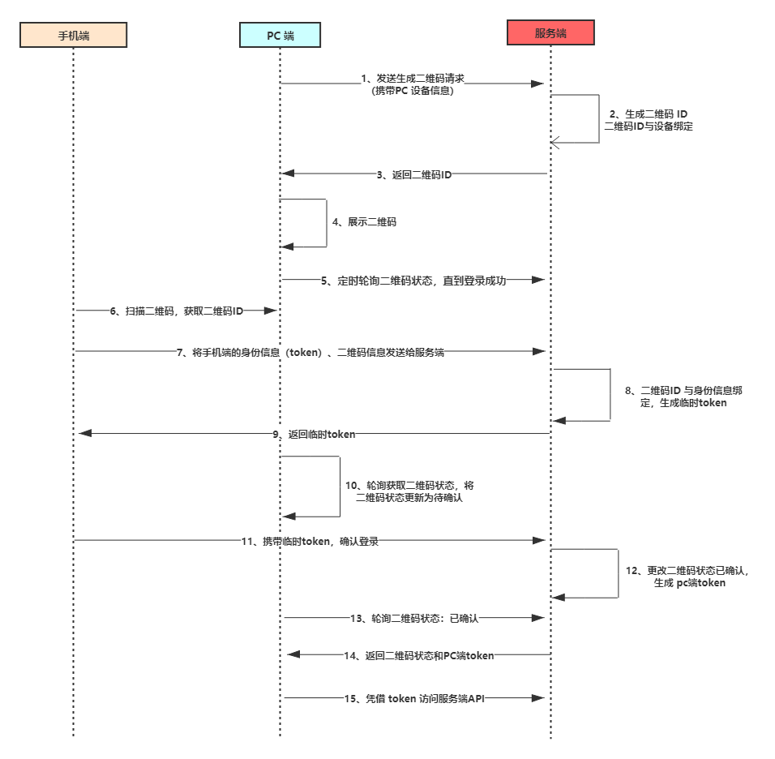

扫码登录原理
扫码登录，可以分为移动端与服务端的交互和PC端与服务端交互两个过程
1.1PC端与服务端
- 1.当用户打开登录页面时，页面会发起一个向服务器发送获取登录二维码的请求。
- 2.服务器接收到请求后，随机生成一个uuid（唯一标识），将这个uuid存入服务器中，同时设置一个国企时间，如果过期，需要重新获取二维码
- 3.把uuid和校验信息生成二维码，将二维码和uuid返回给pc页面。
- 4.pc页面拿到二维码和uuid后，发起轮询。轮询有两种情况：一种是登陆成功，一种是二维码国企，国企需要提示用户刷新二维码。
1.2移动端与服务端
- 1.移动端扫码之后，会得到验证信息和uuid。因为移动端是已经登陆过的，所以，本地有当前的用户信息（token,userId等），
移动端将需要带上用户信息和校验信息，向服务端发送登陆请求
- 2.服务器收到请求后，对比参数中的验证信息，确定是否为用户登录请求接口，如果是，返回一个确认信息给移动端。
- 3.移动端收到返回后，将登录确认框显示给用户，用户确认是进行的登录操作后，移动端再次发送请求。
- 4.服务器拿到uuid和移动端的用户信息后，修改用户的状态，将登录成功的状态和用户信息返回给pc端
- 5.pc端轮询得到登录成功的状态，获取登录信息，登录成功
1.3图解
PC端检测二维码的状态不止轮询一种方式，还有我们熟悉的socket也是可以的
- socket的方式：pc端保持着与服务器的长连接，当手机端扫描二维码后，带着解析得到的二维码ID第一次发送给服务器，当服务器收到这个请求后，
代表用户已经扫描了二维码，这时服务器就可以通过socket告知PC端二维码已被扫描，等待确认；之后手机端不论是取消登录还是确认登录，
都会相应的请求服务器，服务器收到请求会根据相应的逻辑处理，进而通知PC端更新相应的状态
- 轮询方式：轮询方式即在pc端创建一个定时器，每隔一段时间请求服务器查询状态的更新情况，然后更新网页的显示信息。但是这个定时器得控制
好启动时机和生命周期，因为pc端的二维码有可能一直没有被扫描，或者扫描之后没有下一步操作了，这时，如果没有控制好这个定时器，PC端就会
一直的请求服务器查询，造成资源浪费和一定的性能损耗。
